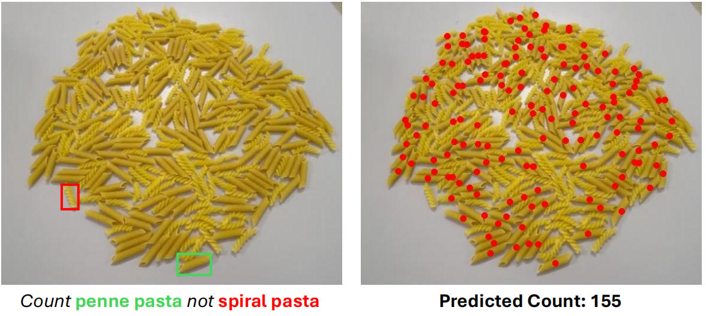
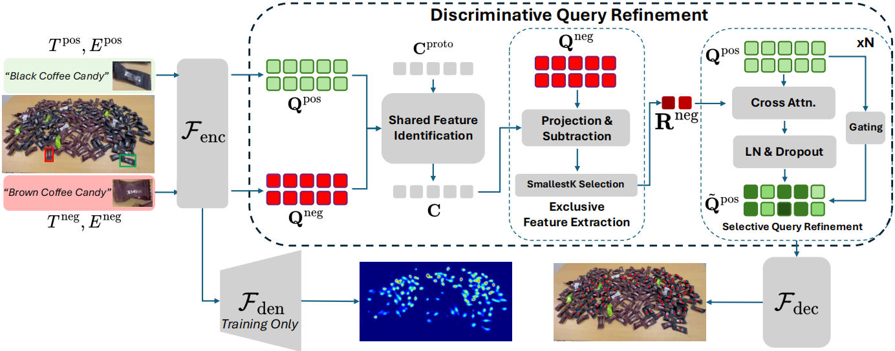

Demo
Demo
 Model
Model
 Dataset
Dataset
Abstract

This paper presents CountEx, a discriminative visual counting framework designed to address a key limitation of existing prompt-based methods: the inability to explicitly exclude visually similar distractors. While current approaches allow users to specify what to count via inclusion prompts, they often struggle in cluttered scenes with confusable object categories, leading to ambiguity and overcounting. CountEx enables users to express both inclusion and exclusion intent, specifying what to count and what to ignore, through multimodal prompts including natural language descriptions and optional visual exemplars.
At the core of CountEx is a novel Discriminative Query Refinement module, which jointly reasons over inclusion and exclusion cues by first identifying shared visual features, then isolating exclusion-specific patterns, and finally applying selective suppression to refine the counting query.
To support systematic evaluation of fine-grained counting methods, we introduce CoCount, a benchmark comprising 1,780 videos and 10,086 annotated frames across 97 category pairs. Experiments show that CountEx achieves substantial improvements over state-of-the-art methods for counting objects from both known and novel categories.
At the core of CountEx is a novel Discriminative Query Refinement module, which jointly reasons over inclusion and exclusion cues by first identifying shared visual features, then isolating exclusion-specific patterns, and finally applying selective suppression to refine the counting query.
To support systematic evaluation of fine-grained counting methods, we introduce CoCount, a benchmark comprising 1,780 videos and 10,086 annotated frames across 97 category pairs. Experiments show that CountEx achieves substantial improvements over state-of-the-art methods for counting objects from both known and novel categories.
Approach

The CountEx approach first constructs query embeddings for inclusion (\(Q_\text{inc}\)) and exclusion (\(Q_\text{exc}\)) using prompts:
The refined query \( Q_\text{refined} \) guides the visual counting module to generate fine-grained density maps and final counts.
\( Q_\text{inc}, Q_\text{exc} = \text{PromptEncoder}(\text{Prompt}_\text{inc}, \text{Prompt}_\text{exc}) \)
Then, a discriminative refinement extracts shared and exclusive features to suppress distractors:
\( Q_\text{refined} = Q_\text{inc} - \alpha \cdot f(Q_\text{exc}, Q_\text{inc}) \)
where \( f(\cdot) \) isolates exclusion-specific components and \( \alpha \) controls suppression strength.The refined query \( Q_\text{refined} \) guides the visual counting module to generate fine-grained density maps and final counts.